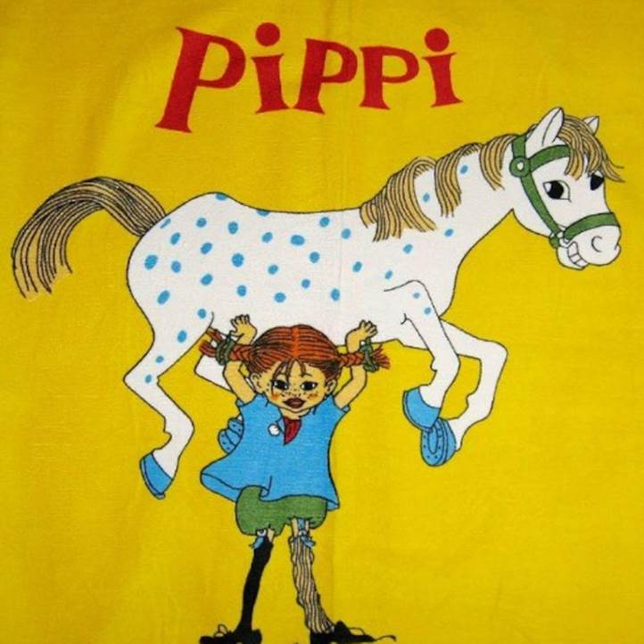
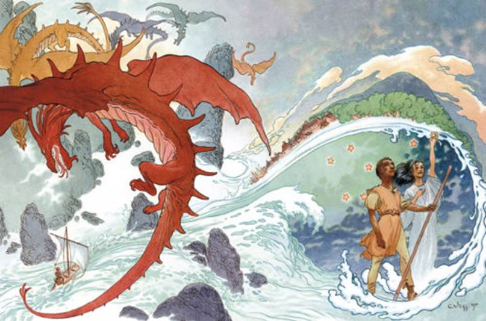
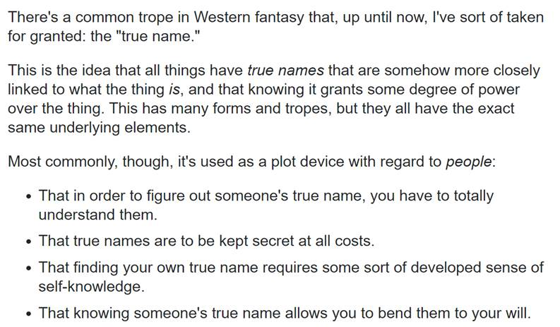

目录
1. 出典：
Ø 长袜子皮皮
Ø 真名设定的补充
2. 剧情：
Ø 剧情简介
1. 出典：
《长袜子皮皮》是瑞典女作家阿斯特丽德・林格伦从1945年开始所著的一部童话故事系列的名字。她的特点有：很长的怪名字，力大无穷，待人热情，善良，独来独往，这些性格特点和雨森很类似。
皮皮的形象和当前主流的乖孩子形成对立，在传统的“好孩子”形象失去概念的现代，皮皮也将失去她的含义。这也是灰流将这个故事描述为“古老”的原因。

Figure 1. 长袜子皮皮
《地海战记》是美国作家厄休拉・勒吉恩所创作的一个架空世界，讲述的是地海大法师格得一生的故事。
在《地海》中，名字是魔法的源泉，万物皆有真名（True name），而当知晓了某物／人之真名，便能成为其主人。因此让别人知道自己的真名是非常危险的行为。在《地海》中绝大多数法师间的交流均用假名，只有非常好的法师朋友之间才用真名相互称呼。
《地海》的第一部《地海巫师》，是主人公格得和自己不慎召出的黑影的追逐战，而这个黑影其实就是他自己的另一面。最后格得用真名呼唤黑影，二者合而为一。所以第一部的主题也可以被看作是：找寻自己名字的旅程。
《地海》在第三卷《地海彼岸》发售15年后发布的续作第四卷《地海孤儿》饱受诟病。据推测是作者在前三部剧情构建的相当完整的情况下，失去了明确的写作目的，陷入了举棋不定的迷茫尝试状态，例如宣扬女权等，而导致整部作品未能平衡好说理和叙事的关系。

Figure 2. 《地海》幻想图

翻译：
在西方的童话故事中，有一个沿用至今的，“我”已经认为是理所当然的常用词汇，那就是“真名”。
“真名”的意义在于，它和事物内在的联系更加紧密，而且知道了“真名”之后，在一定程度上拥有一定对事物的支配权。每个事物都会有不同的存在形式和名字，但是它们有且仅有一个相同的内在。
更常见地，“真名”有以下被用于人物叙事中的方式：
 为了了解某人的真名，你必须彻底了解他们。
为了了解某人的真名，你必须彻底了解他们。
 对于真名，人们一定会不惜任何代价来保密。
对于真名，人们一定会不惜任何代价来保密。
 找到自己的真名，需要发展出一定程度的自我认知。
找到自己的真名，需要发展出一定程度的自我认知。
 了解某人的真名，能够让你支配他们的意志。
了解某人的真名，能够让你支配他们的意志。
灰流怂恿雨森（初中生家里蹲）进行找寻自己名字的旅行，顺便给她取了一个假名。
注意雨森跟灰流提到的魔法并不存在于现实中，而是她自己所描绘的幻想世界的情景。